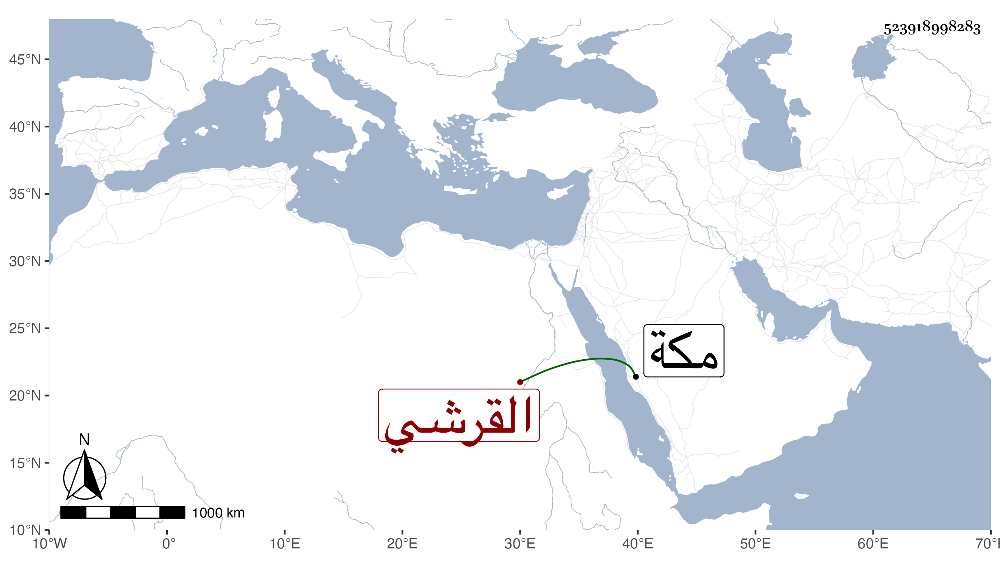

0902Sakhawi.DawLamic.ITO20230111-ara1.EIS1600.523918998283
Biography ID: 523918998283
القرشي نسبة لقريش خلق كثيرون منهم التاج محمد بن صالح الفافا أحد الفضلاء النواب وابنه الجلال أحمد التاجر ممن سمع مني بمكة عبد القادر بن عبد الوهاب بن عبد المؤمن وعيسى بن موسى بن علي بن قريش المكي وابنه أحمد وابنه عبد الواحد ولعبد الواحد اخوة أيضا فيهم من هو أكبر منه .
